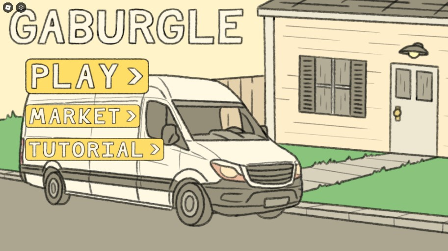
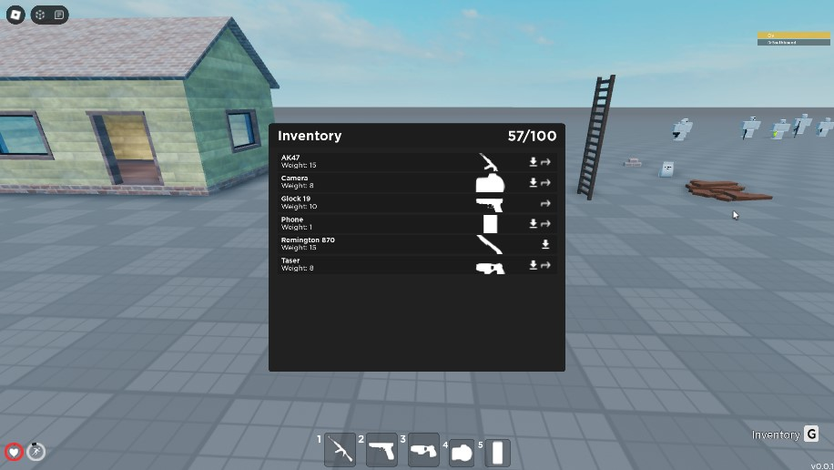
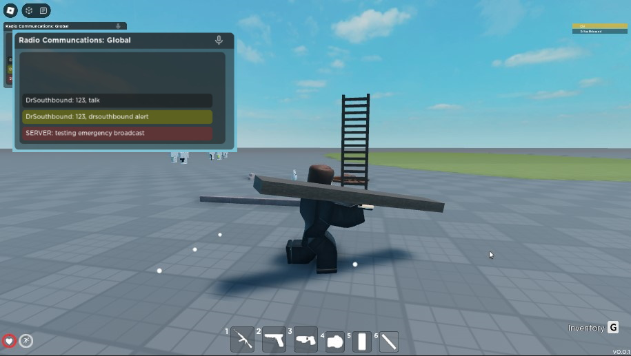
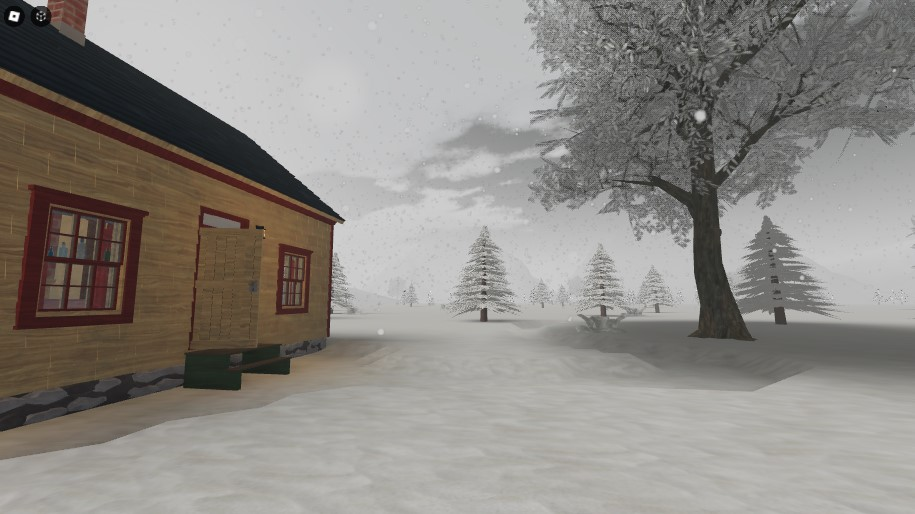

March 2022 - A project I worked on with a friend, a 2D game compiled of robbing a house but not being able to fit anything outside. So you had to trade cards around to try and craft the items out of spare materials you found around the house like fabrics, tape, and spatulas to eventually make the object and win the round. This project unfortunently was not completed due to my friend who made all the images moving onto other projects.

Jan 2023-Mar 2023 - With this project I made a full interaction system including an inventory, building system, NPC system, justice system including cuffing, grabbing, citing, and booking to arrest a suspect. The project took around one month to complete as it was on and off and it showed me a lot about how to properly use modulescripts to modularize a system with welds and tools with the custom tool system and radial menus for stats.

Jan 2023-Mar 2023 - With more into the interaction system, the building system as shown was able to get a player to place down wood, concrete, and bricks on a preset area for a roleplay game. The progress made by player(s) would save across servers and upon completion of the project would result in the finished project being put into the game automatically. This could help player roleplays with construction companys, it also displays the radio and how it would alert people if their name was said.

Late 2023 - This project was a snow system I made, it comprised of a large snow mesh full of bones in order to make a walkable snow deformation system, whenever a player stepped on the snow it would shrink down as to resemble it being squished. There was a shovel tool that could get rid of large quantities of snow as it wouldn't squish down if it was to high, and there was a system inplace to get rid of snow if it were to interfere with a building.